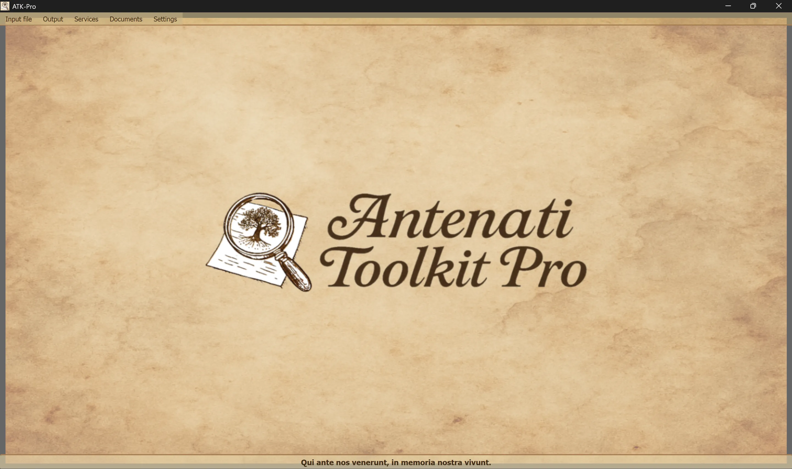

────────────────────────────────────────────────────────────────────────────────
🪟 Windows
ATK-Pro-Setup-vx.x.x.exe from the official Releases page🐧 Linux
ATK-Pro-vx.x.x.deb (Debian/Ubuntu) or .tar.gz from the Releases pagesudo dpkg -i ATK-Pro-vx.x.x.deb or double-click it in Nautilus/Files./ATK-Pro from the extracted folder🍎 macOS
ATK-Pro-vx.x.x.dmg from the Releases page🪟 Windows
C:\Program Files\ATK-Pro\C:\Users\[YourName]\Documents\ATK-Pro\output\C:\Users\[YourName]\Documents\ATK-Pro\input\🐧 Linux
/opt/ATK-Pro/ (.deb) or extracted folder (.tar.gz)~/Documents/ATK-Pro/output/~/Documents/ATK-Pro/input/🍎 macOS
/Applications/ATK-Pro.app~/Documents/ATK-Pro/output/~/Documents/ATK-Pro/input/────────────────────────────────────────────────────────────────────────────────
The available languages are:
Based on the data available at the end of 2025, these languages are estimated to cover approximately 98% of people of Italian descent and Italian or Italian-speaking communities worldwide.
When run for the first time, the program automatically creates the following folders:
C:\Users\[YourName]\Documents\ATK-Pro\output\C:\Users\[YourName]\Documents\ATK-Pro\output\doc\ (default for documents)C:\Users\[YourName]\Documents\ATK-Pro\output\reg\ (default for registers)~/Documents/ATK-Pro/output/input/ folder is also available (optional, for input files)During processing, temporary folders are created for the downloaded tiles (tiles_canvas_X/) and, if a PDF is requested, temporary files are created to generate it.
All temporary folders and files are automatically deleted when processing is complete.
Only the final processed files remain (images in the selected formats, PDF, manifests, and metadata).
To change the output folders, use Menu → Settings → "Select output folders". Your selections are saved and automatically restored in the next session.
The command Settings → Resource profile adjusts the parallelism used during downloads, image reconstruction, and PDF generation:
The profile does not alter the quality, rights, or quantity of the acquired documents. Portal-specific precautionary limits continue to take precedence.
────────────────────────────────────────────────────────────────────────────────
The main Antenati Toolkit Pro window has a simple and intuitive structure.

At the bottom is the Latin motto “Qui ante nos venerunt, in memoria nostra vivunt,” recalling the importance of roots and collective memory.
At the top of the window, below the header:
[Input files] [Output] [Services] [Documents] [Settings]
Each menu contains specific buttons and options (see the next section).
Manages the loading of IIIF records:
├─ Sample input
│ └─ Displays the sample file (shows the pair format: D/R mode + URL)
├─ Open input
│ └─ Selects a .txt file containing your IIIF records
│ (It must contain pairs: D/R mode on line 1, URL on line 2)
└─ Edit input
└─ Edits the currently loaded input file
(Add/remove records, change URLs, save changes)
Manages processing and output:
├─ Process │ └─ Starts downloading, reconstructing, and saving the images │ (Displays a real-time progress window) ├─ Open output folder │ └─ Opens the folder containing the processed files in File Explorer └─ View previous processing jobs └─ Lists records that have already been processed
List of integrated services:
├─ AI-Assisted Search │ └─ Suggests portals, research leads, and genealogical queries to verify ├─ Image Viewer │ └─ Viewer for downloaded images and/or generated PDFs ├─ JSON Metadata Viewer │ └─ Original JSON files and metadata (genealogical, technical, EXIF) ├─ Advanced OCR │ └─ Nineteenth-century handwritten texts, ecclesiastical Latin, and late medieval texts ├─ OCR Translation │ └─ Automatically translates extracted texts into the selected languages └─ GEDCOM Export └─ GEDCOM, Gramps, Family Tree Maker, Ancestry, MyHeritage, WikiTree, etc.
Access to resources and documentation:
├─ Disclaimer - Legal clauses and terms of use ├─ About the author - Background of the project's author ├─ Project overview - History, motivations, and ATK-Pro roadmap ├─ Guide - Main index of the modular guide └─ Information - Version, copyright, and contact email
General program configuration:
├─ Change language
│ └─ Selects the interface language (restart required)
├─ Select image formats
│ └─ Selects from PNG, JPG, TIFF, and PDF (at least 1 is required)
│ PDF may be selected on its own or together with image formats
│ The selection is saved and automatically preselected in the next session
├─ Select output folders
│ └─ First opens the folder mode selection, followed by the folder selection windows:
│ • Single folder for all → one folder for both documents and registers
│ • Separate doc/reg folders → one folder for all documents and one for all registers
│ • Folder for each record → a separate folder for each record
│ The mode and folders are saved and restored in the next session
├─ Export configuration
│ └─ Saves the current settings to a file
├─ Import configuration
│ └─ Loads a previously saved settings file (restores all preferences and paths)
├─ Check for updates
│ └─ Checks whether new versions of the program are available
└─ Close
└─ Exits the program (displays the PayPal.me support banner)
────────────────────────────────────────────────────────────────────────────────
ATK-Pro is available in 20 languages:
The language can be changed at any time via Menu → Settings → Change Language.
The program requires a restart to apply the new language.
Upon restart, the program automatically loads the newly selected language.
The following are translated when the language is changed:
If a default model is retired or becomes unavailable, ATK-Pro queries the catalog visible to the credential, selects a general-purpose model compatible with the function and with images when required, then tries up to three alternatives. Fallback is not activated for quota, network, or authentication errors.
Model override: a manually entered model remains binding and is never replaced automatically.